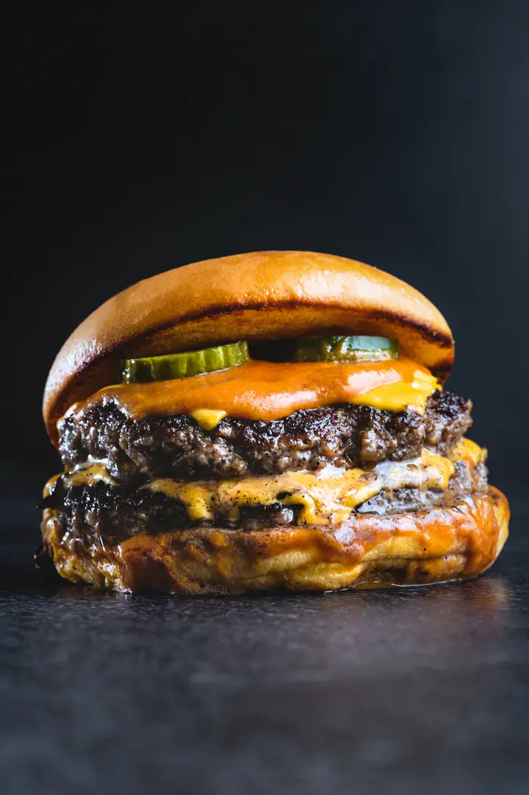

Fornalha Burger
Blend prensado na chapa quente, crosta crocante e cheddar escorrendo. Do jeito que hambúrguer tem que ser.
Terça a domingo · a partir das 18h30
Cardápio
Quatro clássicos da casa. Todo lanche vem com batata rústica e o molho Fornalha.
Como pedir
Veja o cardápio com foto e preço, sem baixar nada.
Um toque no botão abre o WhatsApp com o pedido começado.
No balcão ou na sua casa, ainda quente.
Quem já foi
A crosta do smash é outra coisa. Volto toda sexta.
Pedi pelo WhatsApp e chegou quente. O duplo vale cada real.
Lugar pequeno, atendimento rápido e o melhor cheddar da região.
Depoimentos ilustrativos: este é um negócio fictício.
Visite
Terça a domingo · a partir das 18h30